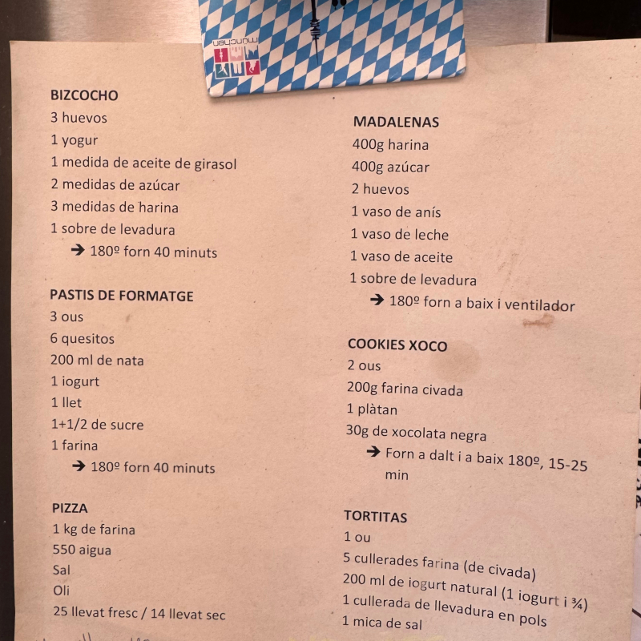

Portal de Receptes

Aquesta web pretén digitalitzar la llista de receptes que tinc penjada a la neveraper tal de fer-la accessible des de qualsevol dispositiu mòbil i facilitar que es pugui consultar i compartir facilment.
Durant el desenvolupament d'aquesta web no s'ha malmès cap ingredient.
Totes les receptes estan basades en fets reals i han estat elaborades per mí.
Bon Profit!